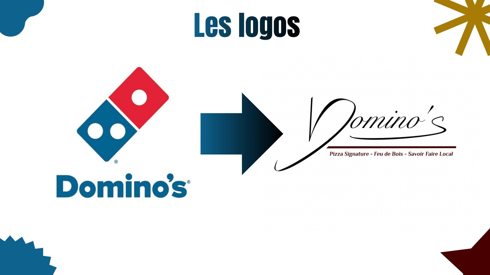
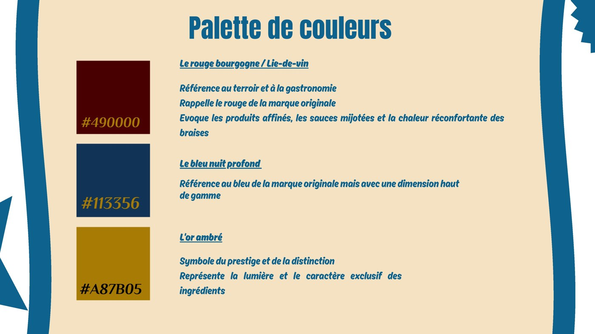
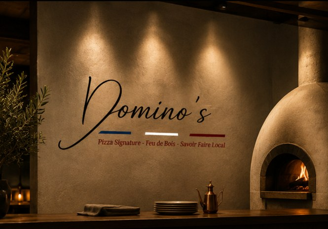
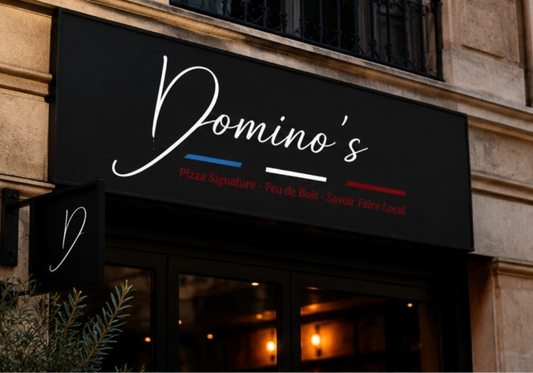
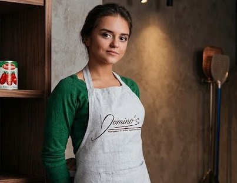

06 / 12Domino's — Repositionnement
Identité · Brand book
Exercice de repositionnement fictif : faire passer Domino's de son ADN d'origine — rapidité, prix à 10 €, « 30 minutes ou c'est gratuit » — à une marque de pizza gastronomique haut de gamme, cuite au feu de bois avec des ingrédients de chefs étoilés. Même nom, promesse totalement inversée.
Le travail a commencé par deux personas opposés — Alexandre, 34 ans, cadre pressé qui associe la livraison à de la « malbouffe tiède », et Jean-Pierre, 66 ans, habitué des grandes tables, rebuté par le marketing de masse — pour identifier ce qu'un repositionnement premium devait résoudre chez chacun.
Le logo abandonne le losange bicolore et la typo bâton d'origine pour une signature calligraphiée (Snell Roundhand), qui évoque la signature manuscrite d'un chef. La palette reprend le bleu et le rouge de la marque d'origine mais les fait basculer vers un bleu nuit profond et un rouge bourgogne, complétés d'un or ambré — code couleur classique du luxe discret. Le tout est décliné sur des supports concrets : façade et enseigne murale du restaurant, tablier de service, carte et carton d'invitation.
J'ai aussi travaillé le copywriting : slogan (« Domino's : l'excellence à votre porte »), phrase d'accroche et CTA construits sur le champ lexical du luxe et de la redécouverte, pour que le discours porte le même virage que l'identité visuelle. Cet exercice m'a appris à faire tenir une histoire de marque cohérente entre stratégie, ton et image — la partie du design qui se voit le moins mais qui tient tout le reste.



